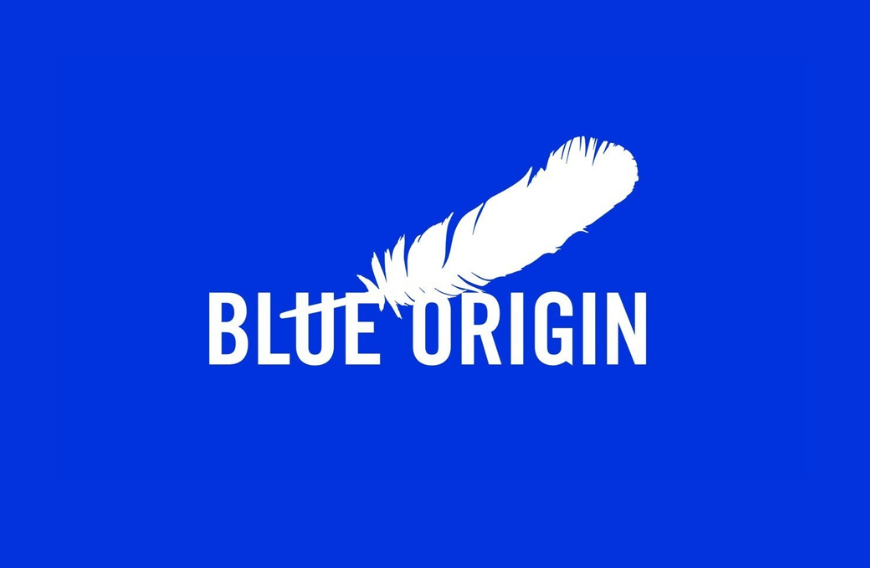
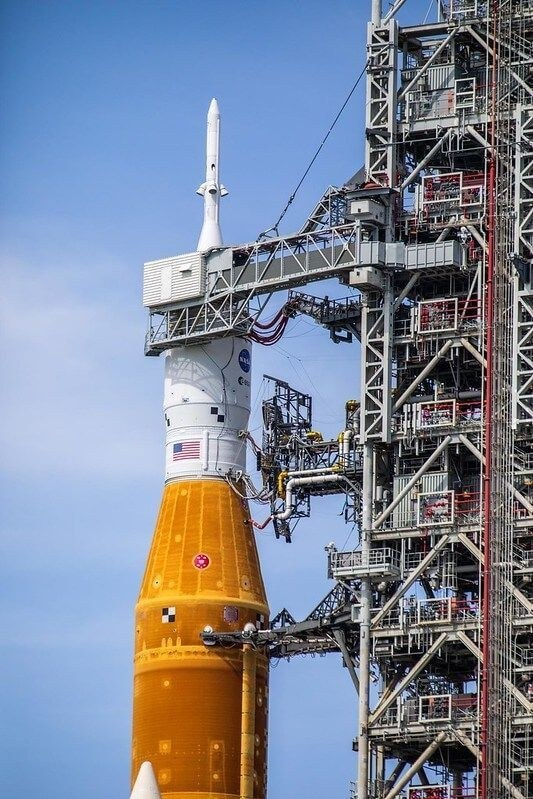
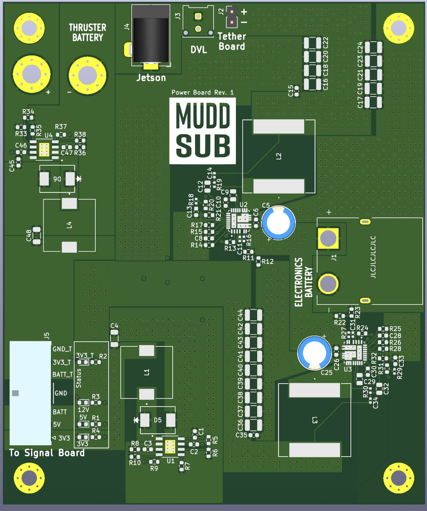
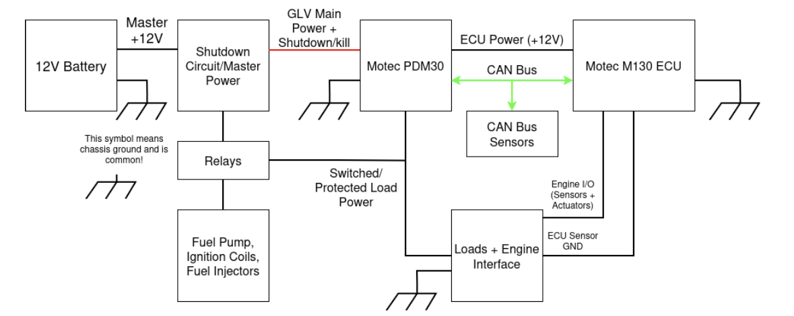

Industry & Research Experience
Strata Robotics: Electrical & Firmware Engineer Intern (Incoming)
Jan. 2027 – May 2027 · Sunnyvale, CA
Electrical and firmware intern at Strata Robotics.
Will support V1 electrical bring-up of an outdoor construction robot: debugging power-electronics and mixed-signal
boards and STM32 firmware networked with an NVIDIA Jetson Orin.
Blue Origin: Sponsored Engineering Project

Automated Umbilical Panel Validation System
Before launch, ground-side umbilical panels must mate with the vehicle to carry propellant, power, and electrical
signals, a process that is still largely manual at extreme heights. Our team is selecting and validating a redundant
multi-sensor suite (radar, LiDAR, proximity sensors, IMU, and computer vision) that feeds control logic with Kalman
filtering to align the panels in all six degrees of freedom to about 0.1 mm, while tolerating rain, fog,
cryogenic temperatures, purge gas, and EMI. I own component selection, sensor installation and packaging design,
and hardware procurement, working with Blue Origin engineers on prototype build-up and testing.

Analog Circuit Lab (USDA): Hardware & Firmware Researcher

Overview:
Designing low-noise analog front ends for USDA electropenetrographs, with impedance matching, instrumentation
amplifiers, and up to 7,000x gain, and moving a dual-battery instrument to a single-supply design with integrated
battery management. Developing nRF5340 firmware on the Zephyr RTOS with SPI, I²C, and ADC drivers, plus
Bluetooth firmware that streams data to client software in real time.
MuddSub: PCB Designer, Electrical Team

Overview:
Contribute to the electrical team's KiCad design of the power and signal boards for MuddSub's 8-thruster autonomous
underwater vehicle, competing in RoboSub. The Rev. 1 boards are now entering fabrication and verification.
The power board converts separate thruster and electronics batteries into 12V, 5V, and 3.3V rails for the Jetson, DVL,
tether, and signal boards. The Teensy 4.1 signal board drives thruster PWM and breaks out I²C, SPI, and UART.
I am also working on a hydrophone amplification front end using impedance matching and AC coupling for acoustic localization.
Harvey Mudd Racing (Formula SAE): Electrical & Engine Team

Overview:
Setting up the CAN bus between the ECU, power distribution module, and lambda sensor, and configuring ECU firmware
and tuning to start the engine under electrical power.
I also designed the low-voltage electrical system for Harvey Mudd Racing's first Formula SAE car. A 12V battery feeds the
shutdown circuit and master power, which supplies a MoTeC PDM30 power distribution module and a MoTeC M130 ECU linked
over CAN bus with CAN sensors. Relays switch the fuel pump, ignition coils, and fuel injectors. The custom harness is
split into six subharnesses (engine sensors, injectors, ignition coils, rear, cockpit, and shutdown circuit) for easier
maintenance and future upgrades, within a $5.5k electrical budget.
Drone FPGA Radio-Telescope Beam Mapping

Overview:
Operated and programmed a large hexacopter drone carrying a custom (Xilinx FPGA) RF transmitter to calibrate and map a clear beam pattern of a ground-based radio telescope, modeling a software defined radio.
Developed FPGA-based software-defined radio system with Verilog and Python, transmitting and receiving GHz-wideband signals for DSP analysis via Fast Fourier Transforms (FFTs).
Configured hardware and software systems include drone flight control (PX4/Ardupilot) GPS synchronization, RF amplification, and Python-based data analysis/visualization.
Head Machine Shop Proctor

Overview:
Supervised safe operation of machining equipment (mills, lathes, bandsaw) by student users, ensuring adherence to shop safety protocols and best practices. Trained peers in proper tool usage, machining techniques, as well as fabrication and tolerancing. As a future improvement proctor: Learn how to use the Big Brother CNC Mill, spot welder, and other advanced machinery.
E79 Practicum Proctor

Overview:
Will supervise and support students through 13 hands-on lab practicums in Harvey Mudd's E79 Systems Engineering course,
where underwater robotics serves as the teaching vehicle for modeling, constructing, and controlling mechanical, thermal,
and electrical systems. Will guide student pairs through 2.5-hour sessions spanning circuit work, soldering, and
field experiences, providing real-time debugging assistance and ensuring adherence to lab safety protocols.
Responsible for fostering a collaborative and inclusive lab environment while helping students develop practical
engineering intuition across all five course modules.
Makerspace Repair Steward

Overview:
Guided makerspace users in safely operating fabrication tools including laser cutters, 3D printers, and welding equipment, fostering an inclusive and collaborative environment. Oversaw project grants and budget distribution for student projects, supporting student innovation while ensuring responsible and equitable use of resources.